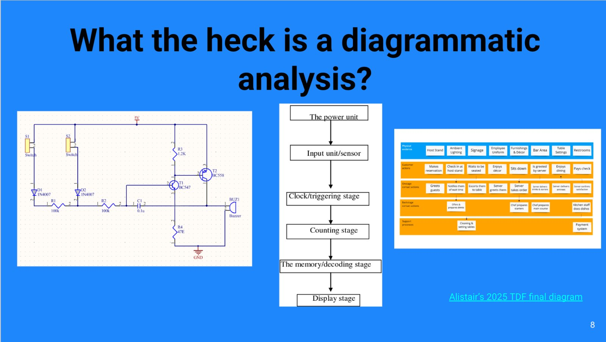
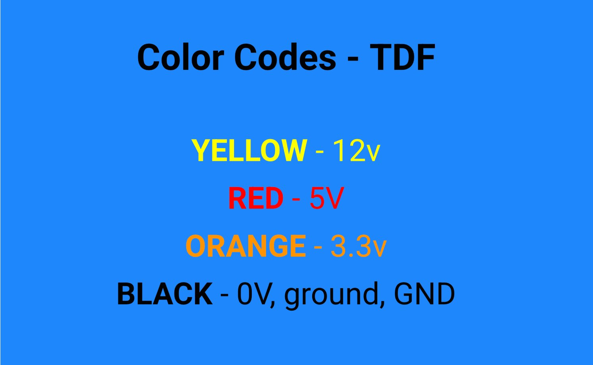
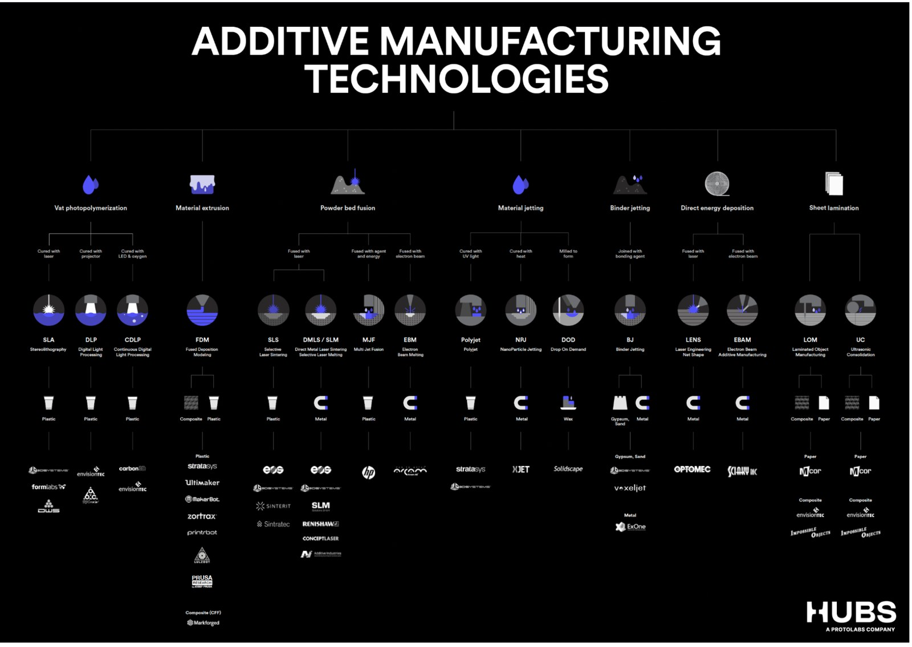
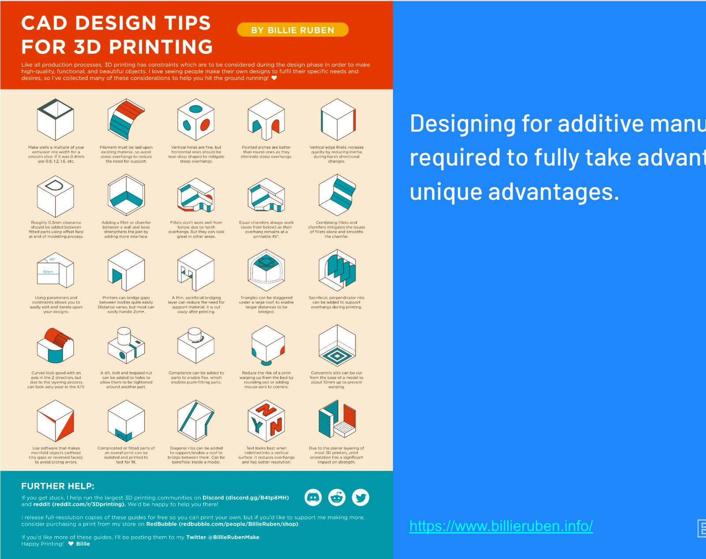
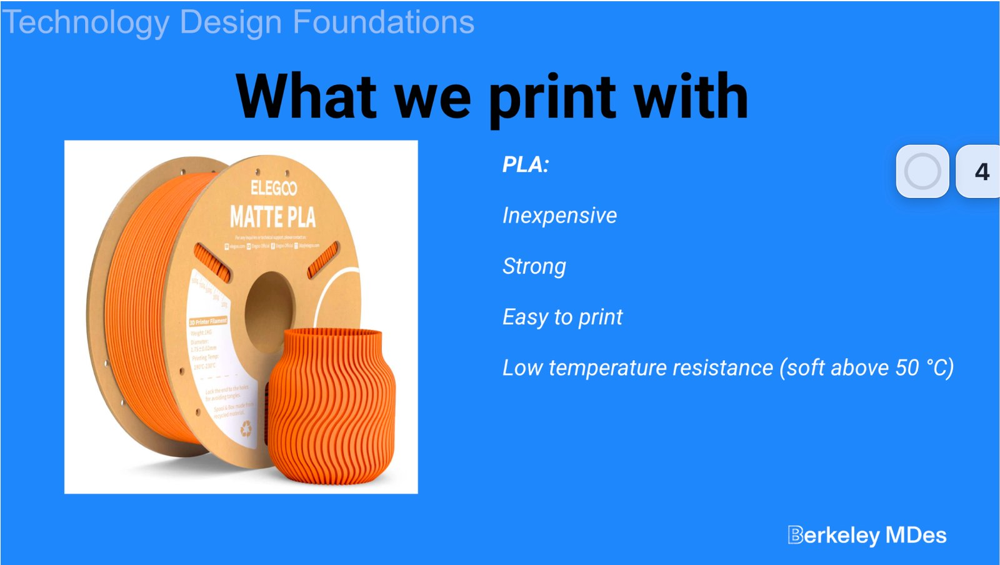
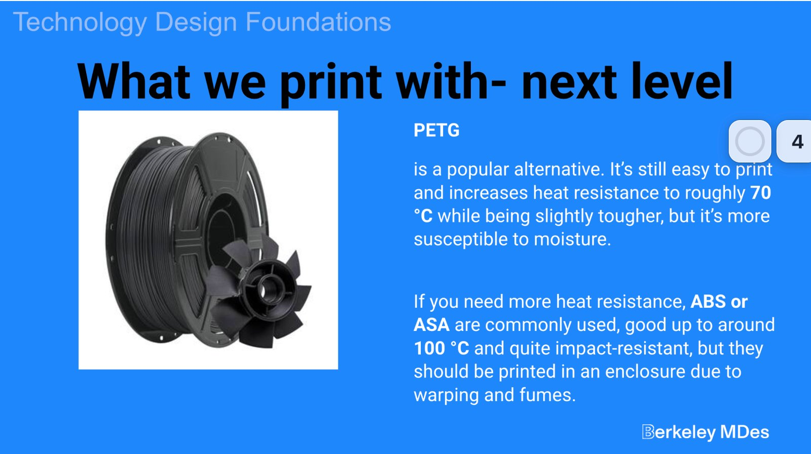
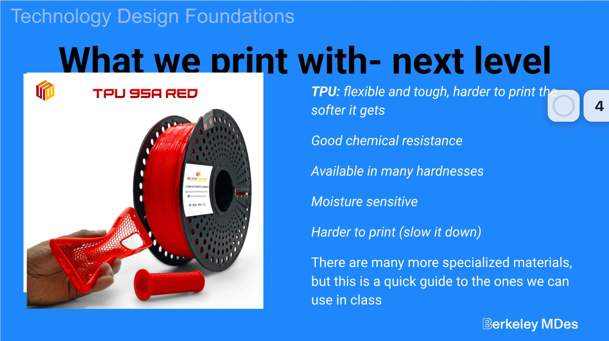
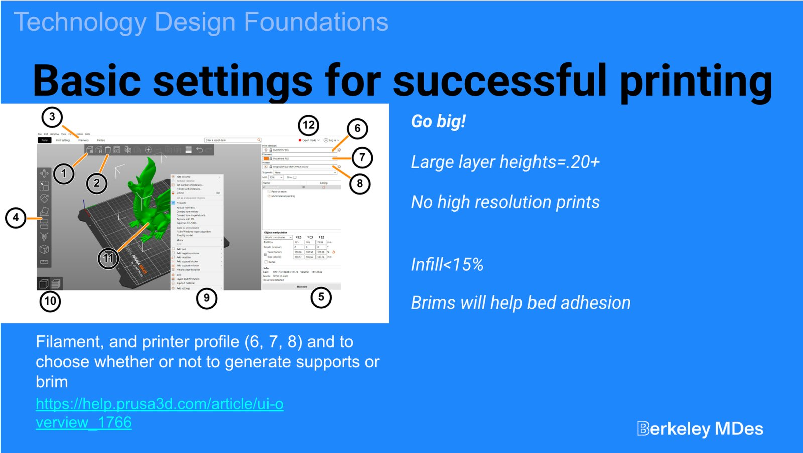
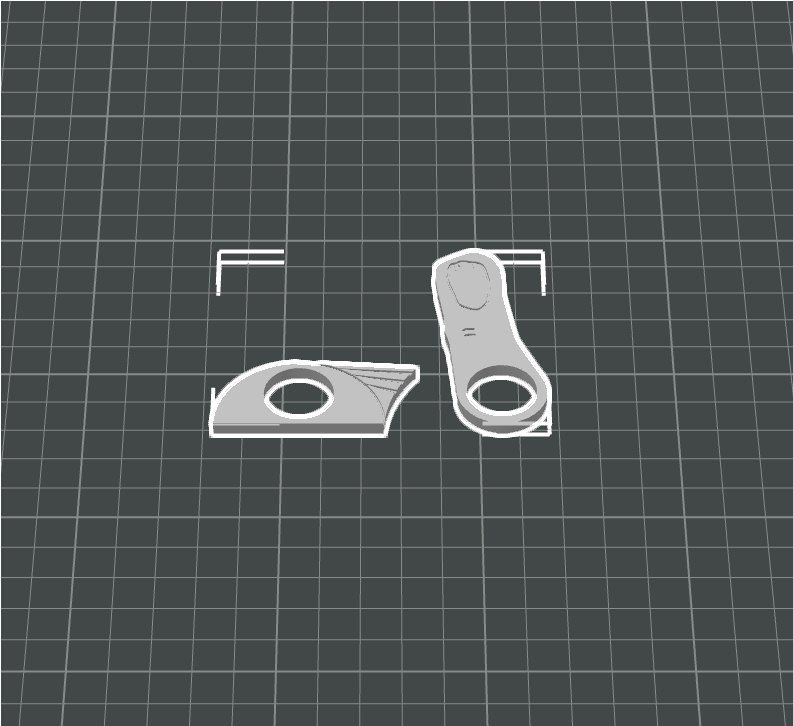
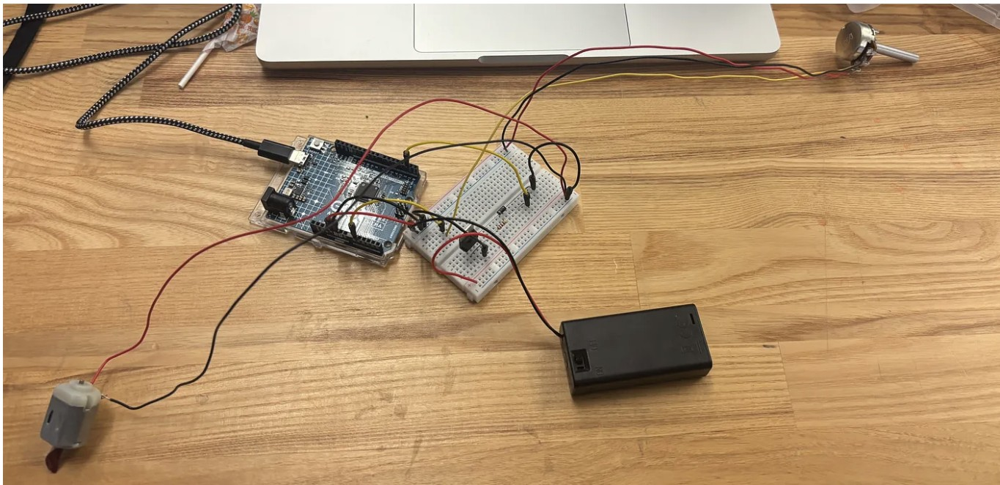

Week 10
Tuesday, Oct 27 · Diagrams & 3D printing
✦ Diagrammatic analysis

- Use a diagram to analyse the system.
- Start from the circuit board.

- Yellow: 12V
- Red: 5V
- Orange: 3.3V
- Black: 0V, ground, GND
✦ Different techniques of 3D printing

Increasing the resolution increases the print time, so always start with a rough one.
✦ Making 3D printing more efficient

✦ What we print with



✦ Basic settings for successful printing

- Print settings for a rough prototype: fast and strong enough. Layer height ≥ 0.20, no high resolution, infill < 15%.
- Brim: increases the contact area. The bigger the part, the higher the chance it shrinks.
- On a large-scale object, use two or more walls to hide the infill.
- Wipe the print plate with alcohol, and wash it with soap.
Thursday, Oct 29 · 3D printed rings & motor test
✦ Rings, printed this time

Reflection: compared to the laser cutter, 3D printing takes much more time, so it is harder to do many iterations in a short period.
✦ Motor validation

Testing a DC motor on the Arduino and breadboard, powered by a battery pack, with a potentiometer as the input.